JavaEE
Lecture 1
结构
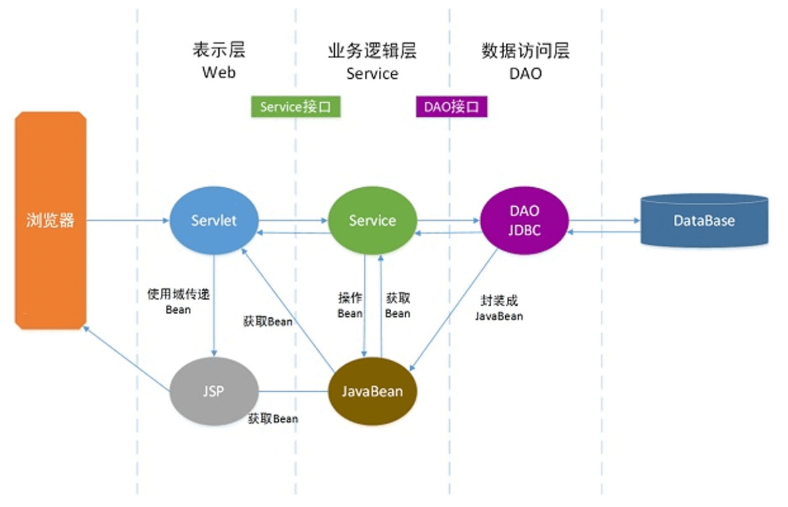
Lecture 2
Spring
- 一个复杂而又简洁的
javabean工厂,管理bean的创建和依赖 - 很普通又很实用的框架，提取了大量实际开发中通用的设计思想和模式，抽象而成的一个框架
- 轻量级的、非侵入式（不依赖
Spring API）的应用框架 - 集成已存在的成熟应用解决方案，开发简单高效
优点：
- 低侵入式设计
- 独立于各种应用服务器
Spring的DI容器，提高组件之间的解耦SpringAOP提供通用任务的集中统一处理（安全、事务、日志等），实现更好的代码复用Spring的ORM 和 DAO提供了与第三方持久层框架的良好整合- 高度开放，可以自由选用
Spring框架的部分或全部
Bean 容器画像
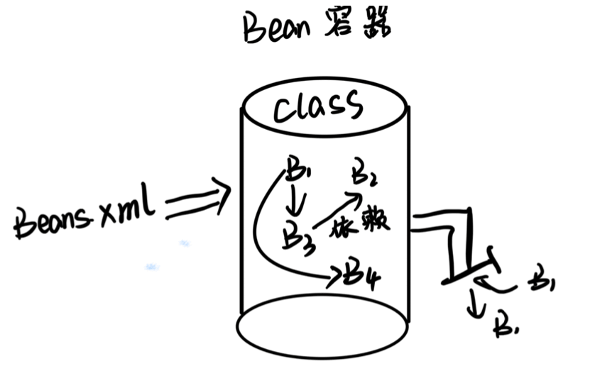
1 | <bean id="group" class="zust.se.Group"> |
1 | BeanFactory ac=new BeanFactory("bean.xml"); |
IOC 和 DI
由容器来管理对象之间的依赖关系，“控制反转”或“依赖注入”
IOC（Inversion of Control）：由容器来负责控制对象的生命周期和对象间的关系DI（Dependency Injection）：在系统运行中，由容器动态的向某个对象提供它所需要的其他对象
DI 注入的两种方式:
设值注入
IOC容器使用属性的setter方法来注入被依赖的实例1
<property name="userDao" ref="userDao"/>
构造注入
IOC容器使用构造器来注入被依赖的实例，按构造函数参数顺序指定对应要注入值， 用index属性指定顺序，从 0 开始1
<constructor-arg ref="db"/>
Lecture 3
IOC
Spring 通过 IoC 容器来管理对象的实例化和初始化，以及对象从创建到销毁的整个生命周期
创建 bean 实例
BeanFactory容器BeanFactory是一个管理Bean的工厂，它主要负责初始化各种Bean，并调用它们的生命周期方法1
2Resource resource = new ClassPathResource("applicationContext.xml");
BeanFactory factory = new XmlBeanFactory(resource);ApplicationContext容器ApplicationContext继承了BeanFactory接口，是BeanFactory的拓展，增加了例如 AOP、国际化、事件支持等功能1
ApplicationContext applicationContext = new ClassPathXmlApplicationContext(String configLocation);
Web 服务器实例化
ApplicationContext容器通常使用基于ContextLoaderListener实现1
2
3
4
5
6
7
8
9
10
11
12
13<context-param>
<param-name>contextConfigLocation</param-name>
<!--加载spring目录下的applicationContext.xml文件-->
<param-value>
classpath:spring/applicationContext.xml
</param-value>
</context-param>
<!--指定以ContextLoaderListener方式启动Spring容器-->
<listener>
<listener-class>
org.springframework.web.context.ContextLoaderListener
</listener-class>
</listener>
注入
注入普通属性
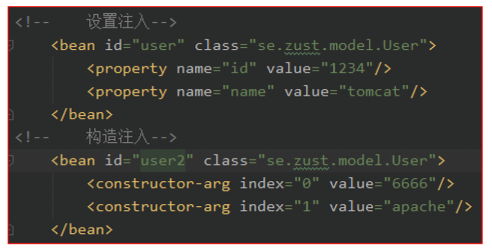注入 bean 引用
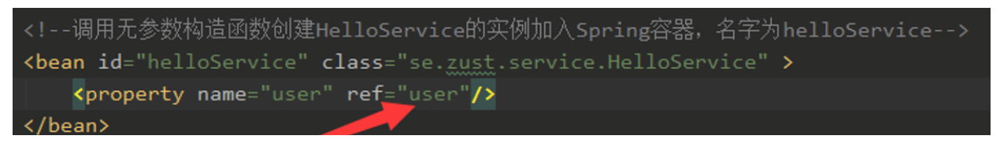bean 的自动装配
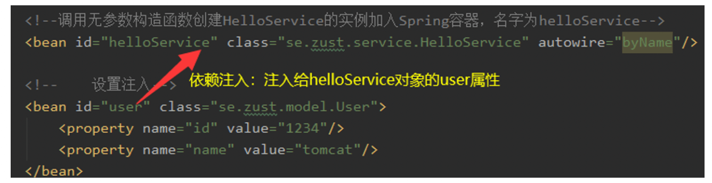注入嵌套 bean：不被 spring 访问，将嵌套的 bean 注入 property 属性中
注入集合类型值：
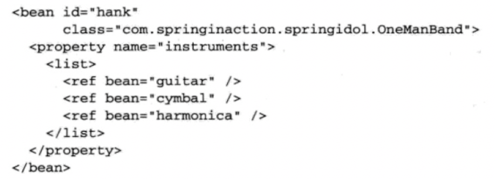
bean 的作用域 scope
singleton（默认）: 单例模式，在整个容器中只有一个实例【可跟踪进行生命周期管理】prototype：原型模式 ，每次通过 getBean 获取时产生一个新的实例request：每次 http 请求产生一个新的实例，web 应用。须在 web.xml 中配置相应的 Listener 或 filterSession：每次 http session 产生一个新的实例 ，web 应用
bean 的生命周期
注入之后——init-method
1
2
3
4<bean id="chinese" class="org.j2ee.service.impl.Chinese"
init-method="init">
<property name="axe" ref="steelAxe"/>
</bean>销毁之前——destroy-method
1
2
3
4<bean id="chinese" class="org.j2ee.service.impl.Chinese"
destroy-method="destroy">
<property name="axe" ref="steelAxe"/>
</bean>
Spring 国际化
使用 MessageSource 接口
注解装配 Bean
@Component:注解描述 Spring 中的 Bean，但它是一个泛化的概念，仅仅表示一个组件（Bean），并且可以作用在任何层次@Repository:用于将数据访问层（DAO 层）的类标识为 Spring 中的 Bean，其功能与 @Component 相同@Service:通常作用在业务层（Service 层），用于将业务层的类标识为 Spring 中的 Bean，其功能与 @Component 相同@Controller:通常作用在控制层（Controller），用于将控制层的类标识为 Spring 中的 Bean，其功能与 @Component 相同@Autowired:可以应用到 Bean 的属性变量、属性的 setter 方法、非 setter 方法及构造函数等，配合对应的注解处理器完成 Bean 的自动配置工作。默认按照 Bean 的类型进行装配@Resource:与 Autowired 相同，区别在于 @Autowired 按照 Bean 类型装配，而 @Resource 按照 Bean 实例名称进行装配
1 | <!--使用context命名空间，通知spring扫描指定目录，进行注解的解析 --> |
1 | ("${u.id}") // 通过@Value将配置文件中u.id的值注入给user的id属性 |
生命周期（在类的成员方法定义语句前注解）
@PostConstruct：注解的方法将会在对象完成构造且依赖注入完成后被自动调用@PreDestroy：注解的方法将在 bean 对象销毁之前被自动调用
Java 日志配置（log4j）
resources 新建 log4j.propertiespom.xml 添加依赖
为类添加 logger 静态属性
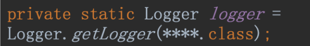
用 logger 输出日志：logger.debug、logger.info、logger.warn、logger.error、logger.fetal
Spring 测试
JUnit：Java 语言的单元测试框架
在任意方法前加@Test 注解容器测试
- 测试类前添加注解@RunWith 和@ContextConfiguration
- 通过@Resource 给测试类注入容器中的 bean
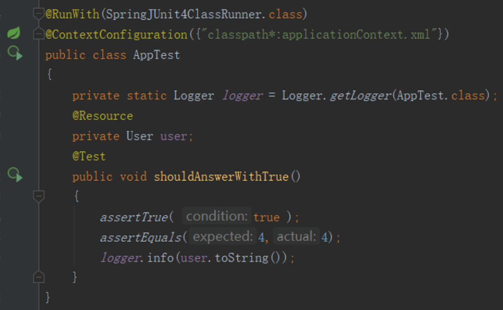
Lecture 4
AOP
- 横向抽取机制（动态代理），取代了传统纵向继承机制的重复性代码
- 可以通过预编译方式和运行期间动态代理实现在不修改源代码的情况下给程序动态统一添加功能
- 主要作用是分离功能性需求和非功能性需求，使开发人员可以集中处理某一个关注点或者横切逻辑，减少对业务代码的侵入，增强代码的可读性和可维护性
- 适用于：日志管理、事务处理、权限控制、异常处理…
概念：
| 名称 | 说明 |
|---|---|
| Joinpoint（连接点） | 指可以被动态代理拦截目标类的方法，表示“在什么地方做” |
| Pointcut（切入点） | 指要对哪些 Joinpoint 进行拦截，即被拦截的连接点 |
| Advice（通知）/增强处理 | 对切入点增强的内容，表示“具体怎么做”，before、after… |
| Target（目标） | 指代理的目标对象 |
| Weaving（织入） | 指把增强代码应用到目标上，生成代理对象的过程 |
| Proxy（代理） | 指生成的代理对象 |
| Aspect（切面） | 一个关注点的模块化，横切多个对象，切入点和通知的结合 |
| 关注点 | 要做什么，公共功能，如：事务管理 |
| 通知 | 说明 |
|---|---|
| before（前置通知） | 通知方法在目标方法调用之前执行 |
| after（后置通知） | 通知方法在目标方法返回或异常后调用 |
| after-returning（返回后通知） | 通知方法会在目标方法返回后调用 |
| after-throwing（抛出异常通知） | 通知方法会在目标方法抛出异常后调用 |
| around（环绕通知） | 通知方法会将目标方法封装起来 |
基于 xml 开发 aop
- 在
xml中导入Spring aop命名空间 - 定义切面（将
bean转化为切面）
1 | <aop:config> |
其中，id 用来定义该切面的唯一表示名称，ref 用于引用普通的 Spring Bean
- 定义切入点
1 | <aop:config> |
id 用于指定切入点的唯一标识名称，execution 用于指定切入点关联的切入点表达式
- 定义通知
AspectJ 支持 5 种类型的 advice
1 | <aop:aspect id="myAspect" ref="aBean"> |
基于注解开发 aop
| 名称 | 说明 |
|---|---|
| @Aspect | 用于定义一个切面 |
| @Pointcut | 用于定义一个切入点 |
| @Before | 用于定义前置通知，相当于 BeforeAdvice |
| @AfterReturning | 用于定义后置通知，相当于 AfterReturningAdvice |
| @Around | 用于定义环绕通知，相当于 MethodInterceptor |
| @AfterThrowing | 用于定义抛出通知，相当于 ThrowAdvice |
| @After | 用于定义最终 final 通知，不管是否异常，该通知都会执行 |
- 在
XML文件中添加以下内容启动@AspectJ
1 | <aop:aspectj-autoproxy> |
- 定义切面
1 |
|
- 定义切入点
1 | // 要求：方法必须是private，返回值类型为void，名称自定义，没有参数 |
- 定义通知
1 | ("myPointCut()") |
Lecture 5
ORM
ORM 是 Object Relational Mapping 的缩写，“对象关系映射”，它解决了对象和关系型数据库之间的数据交互问题
| 数据库 | 类/对象 |
|---|---|
| 表（table） | 类（class） |
| 表中的记录（record，也称行） | 对象（object） |
| 表中的字段（field，也称列） | 对象中的属性（attribute） |
ORM 通过使用描述对象和数据库之间映射的，将 java 程序中的对象自动持久化到关系数据库中
在业务逻辑层和呈现层中，我们是面向对象的。当对象信息发生变化的时候，我们需要把对象的信息保存在关系数据库中
（避免数据访问层代码重复）
JPA
Java Persistence API，就是 java 持久化 api,是基于 ORM 的一种规范
开发步骤：
- 创建
maven项目 - 加入
hibernate-entitymanager依赖包 - 加入数据库
mysql-connector-java依赖包 - 在
resources/META-INF中添加persistence.xml配置 JPA，配好实体类的包扫描， 在实体类包中为每张表对应
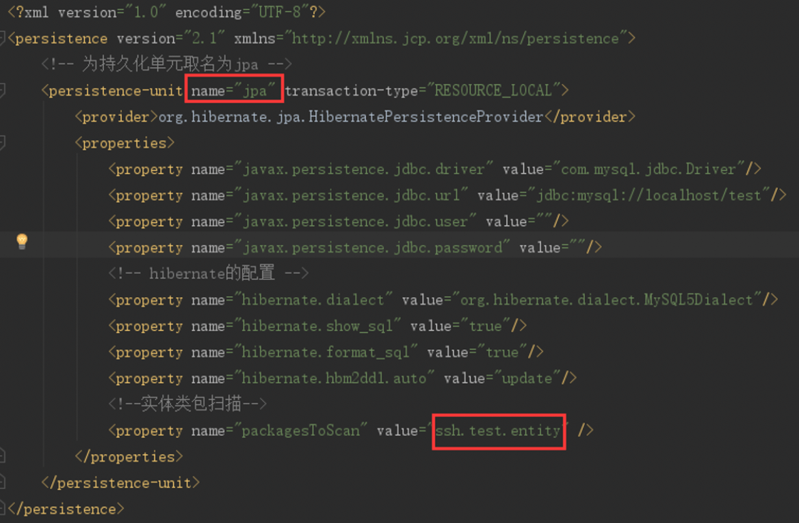
- 建立一个实体类
JavaBean - 创建
javabean - 为数据库字段添加对应属性
- 在类前面添加@Entity 和@Table(“”)注解属性
- 在属性前添加相应注解
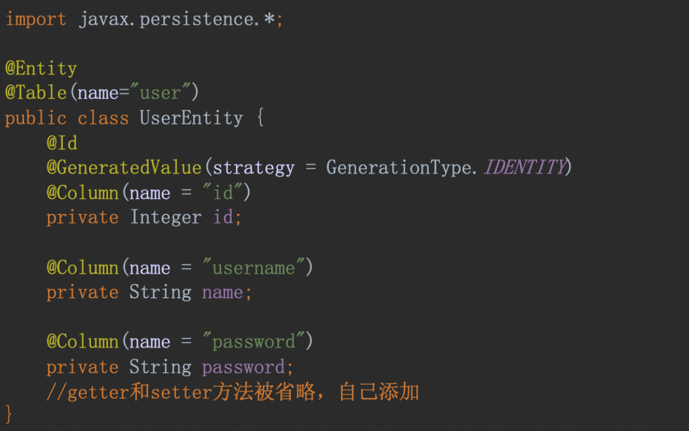
- 表注解：在实体类定义语句前注解
1 |
|
- 主键：在主键对应属性的 getter 方法前注解
1 |
|
- 普通属性：在对应属性的 getter 方法前注解
1 | (name = "propName") |
1 | (fetch=FetchType.LAZY|EAGER) |
JPA 操作数据库:
- 利用
jpa配置创建entityManager - 利用
entityManager的接口方法操作数据库
| 单元 | 描述 |
|---|---|
| EntityManagerFactory | EntityManager 的工厂类,它创建并管理多个 EntityManager 实例 |
| EntityManager | 这是一个接口，它管理的持久化操作的对象 |
| Entity | 实体，是持久性对象，是存储在数据库中的记录 |
| EntityTransaction | 与 EntityManager 一对一关系；对于每一个 EntityManager，由 EntityTransaction 类维护 |
| Persistence | 这个类包含静态方法来获取 EntityManagerFactory 实例 |
| Query | 该接口由每个 JPA 供应商，能够获得符合标准的关系对象 |
1 | /** |
持久化对象状态：
瞬时对象(New Objects)：使用 new 操作符初始化的对象不是立刻就持久的。它们的状态是瞬时的，也就是说它们没有任何跟数据库表相关联的行为，只要应用不再引用这些对象，它们的状态将会丢失，并由垃圾回收机制回收。托管对象(Manage Objects)：持久实例是任何具有数据库标识的实例。它有持久化管理器 EntityManager 统一管理，持久实例是在事务中进行操作的——它们的状态在事务结束时同数据库进行同步。当事务提交时，通过执行 SQL 的 INSERT、UPDATE 和 DELETE 语句把内存中的状态同步到数据库中。离线对象(Detached Objects)：EntityManager 关闭之后，持久化对象就变为离线对象。离线表示这个对象不能再与数据库保持同步，它们不再受 JPA 管理。
持久化对象生命周期：
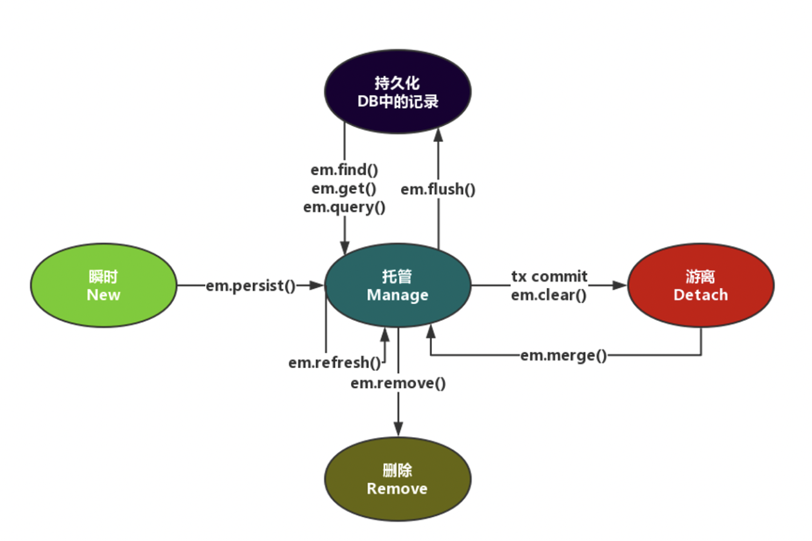
Lecture 6
Lombok
@Data 注解生成实体类属性的 getter/setter 等方法
用@Setter、@Getter 代替@Data
@Data 注解不仅帮我们实现了生成了 getter/setter 同时还重写了 equals(Object other) 和 hashCode()方法， Lombok 会将 Project 类中的 List projects 当做是 hashCode 计算的一部分（同理，equals,toString 也会存在同样的问题），而如果我的项目中出现循环引用，这就会导致死循环，最终就会抛出 StackOverFlowError
单表映射
双向一对一关系
1 | (optional = true, cascade = CascadeType.ALL) |
1 | (cascade = CascadeType.ALL, mappedBy = "tidCard") |
多表映射
双向一对多关系
1 | (cascade = CascadeType.ALL,fetch =FetchType.LAZY,mappedBy = "tuser") |
1 | (fetch = FetchType.LAZY) |
级联 cascade
两个对象之间的操作联动关系，对一个对象执行了操作之后，对其指定的级联对象也需要执行相同的操作
CascadeType. PERSIST 级联持久化 ( 保存 ) 操作CascadeType. MERGE 级联更新 ( 合并 ) 操作CascadeType. REFRESH 级联刷新操作，只会查询获取操作CascadeType. REMOVE 级联删除操作CascadeType. ALL 级联以上全部操作
Lecture 7
hql
1 | Query query = entityManager.createQuery( |
hql 步骤：
- 获取
JPA的entityManager对象 - 编写
HQL语句 entityManager.createQuery(HQL)创建Query对象query.setXXX设置查询参数query. getResultList()得到查询结果（持久化实体集）
Lecture 8
步骤：
- 创建
maven项目 - 添加
MyBatis依赖 - 在
resources下创建jdbc.properties（可以是其他名字） - 在
resources下创建SqlMapper.xml（可以是其他名字） - 在
entity包中创建POJO（不一定与表对应） - 在
dao包中创建mapper接口 - 在
mapper包中创建mapper配置文件，文件中每个 select 的 id 与 mapper 接口中的一个方法对应 - 编写测试类进行测试
MyBatis 接口方法：
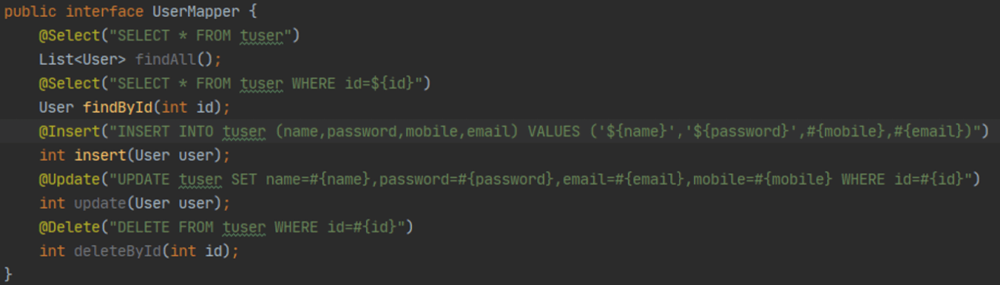
配置：
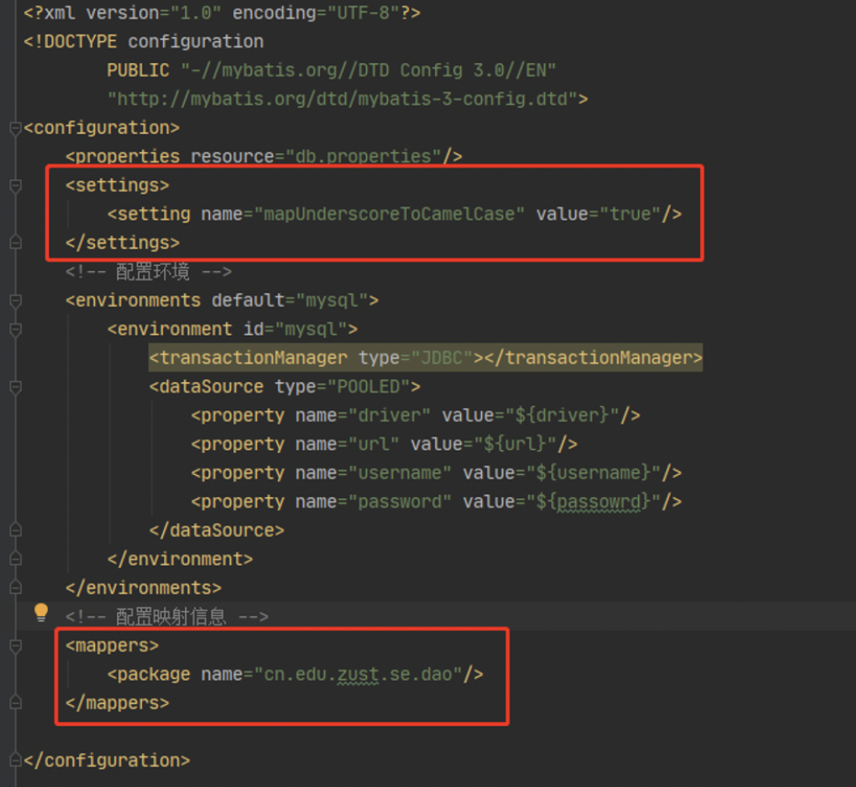
测试：
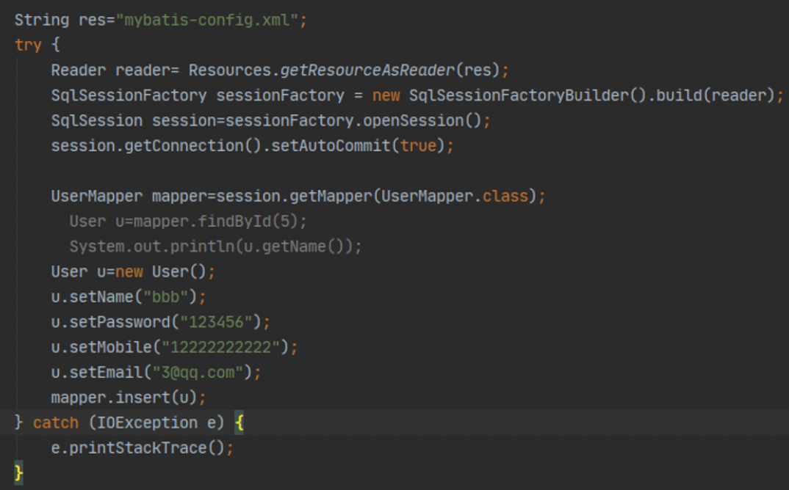
#{} 占位符 、${} 拼接符：
#{}为参数占位符 ?，即 sql 预编译，能防止 sql 注入，有‘ ’单引号，建议多使用${}为字符串替换，即 sql 拼接，不能防止 sql 注入，无单引号；表名，orderby 必须用
JPA、MyBatis 对比
Hibernate：
目前最流行的 ORM 框架，设计灵巧,文档丰富(完全自动操作)，只是性能不好控制(自己去控制性能,不是很好控制)。Hibernate 是一个完整的 ORM 框架,常规 CRUD 我们不需要写一句 SQL;各大 ORM 框架实现这个规范。可以自动建表。
MyBatis:
允许开发人员直接编写 SQL(更好灵活)。并不是一个完整的 ORM 框架,因为我们还需要自己去写全部 SQL。不是完整的 ORM,程序员需要自己去写全部的 SQL,可以进行更为细致的 SQL 优化，轻量级框架，学习成本低，性能好控制。不能自动建表。
SQL 映射框架，将 SQL 结果与对象进行映射
半自动：开发人员写 SQL，通过 iBatis 映射成对象
两者对比：MyBatis 是一个小巧、方便、高效、简单、直接、半自动化的持久层框架，JPA是一个强大、方便、高效、复杂、间接、全自动化的持久层框架规范
Lecture 8-2
Spring Data
Spring 的一个子项目。用于简化数据库访问，支持 NoSQL 和关系数据存储。其主要目标是使数据库的访问变得方便快捷
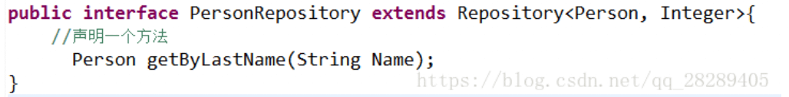
JpaRepository
List findAll();//查找所有实体List findAll(Sort sort);//排序、查找所有实体List save(Iterable<? extends T> entities);//保存集合void flush();//执行缓存与数据库同步T saveAndFlush(T entity);//强制执行持久化void deleteInBatch(Iterable entities);//删除一个实体集合
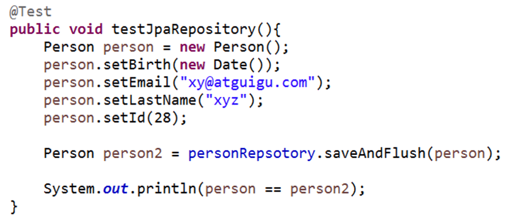
Lecture 9
Web MVC 演进
jsp+bean- 标准
MVC Web MVC（请求-响应，前后端分离）
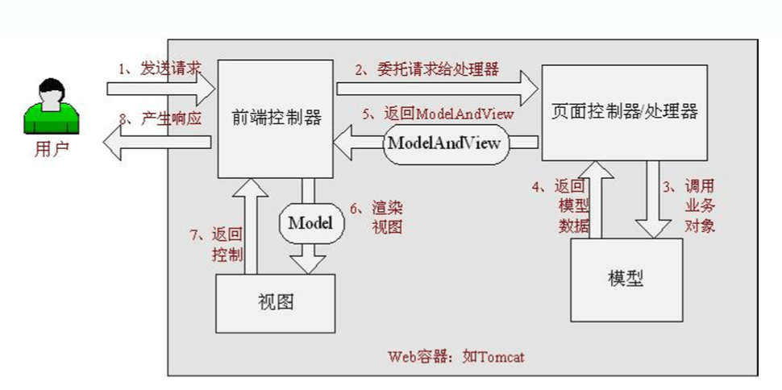
MVC
一种基于 Java 的实现了 Web MVC设计模式的请求驱动类型的轻量级Web框架，即使用了MVC架构模式的思想，将Web层进行职责解耦 基于请求驱动指的就是使用请求-响应模型。Spring Web MVC简化日常Web` 开发，支持本地化（Locale）解析、主题（Theme）解析及文件上传等；提供了非常灵活的数据验证、格式化和数据绑定机制；提供了强大的约定大于配置（惯例优先原则）的契约式编程支持
- 前端控制器：
DispatcherServlet - 应用控制器：
映射管理器(Handler Mapping)+视图解析器(View Resolver) - 页面控制器：
Controller（可以实现 Controller 接口，也可以是 POJO）
开发步骤：
- 新建
maven项目，补全项目结构 - 添加
SpringMVC包依赖及jetty配置 - 修改
web.xml，添加springmvc控制器配置 - 在
WEB-INF下添加SpringMVC的配置文件（包扫描及resolver配置）
规划用户请求:
- 开发
controller - 开发视图（jsp）
clean jetty:run -Djetty.port=8088编译启动 web 站点- 测试站点
Lecture 10
Spring MVC
web.xml:Spring MVC 是基于 Servlet 的，DispatcherServlet 是整个 Spring MVC 框架的核心，主要负责截获请求并将其分派给相应的处理器处理。所以配置 Spring MVC，首先要定义 DispatcherServlet
- 部署
DispatcherServlet - 表示容器再启动时立即加载
servlet - 处理所有
URL
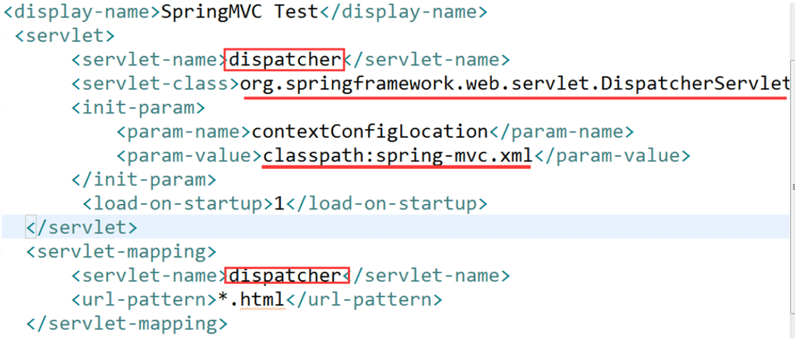
controller:
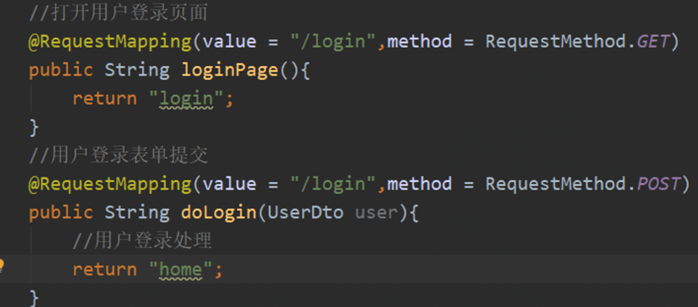
| 请求方法 | 说明 |
|---|---|
| GET | 多次执行同一 GET 请求，不会对系统造成影响，具有幂等性[指多个相同请求返回相同的结果]，充分使用客户端的缓存 |
| POST | POST 方法，通常表示“创建一个新资源”，但它既不安全也不具有幂等性（多次操作会产生多个新资源） |
参数类型绑定：
@RequestParam绑定请求参数@RequestHeader绑定请求头参数@CookieValue绑定 Cookie 的值@PathVariable绑定 URL 中的变量
1 | (value="/handle1") |
命令/表单对象绑定：
1 | (value = "/handle14") |
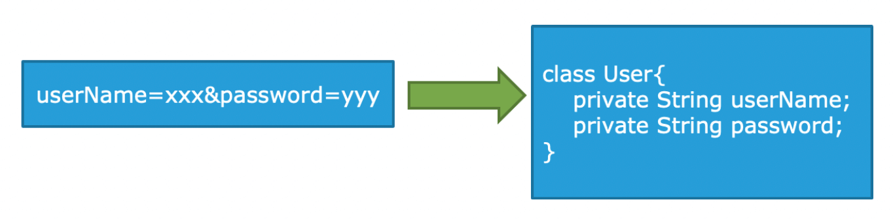
Servlet API 对象作为入参:
如果处理方法自行使用 HttpServletResponse 返回响应，则处理方法的返回值设置成 void 即可
1 | (value = "/handle21") |
or
1 |
|
视图解析：
jstl
1 | <!-- 视图解析器 --> |
- 发起请求到前端控制器
(DispatcherServlet) - 前端控制器请求
HandlerMapping查找Handler可以根据xml配置、注解进行查找 - 处理器映射器
HandlerMapping向前端控制器返回Handler - 前端控制器调用处理器适配器去执行
Handler - 处理器适配器去执行
Handler Handler执行完成给适配器返回ModelAndView- 处理器适配器向前端控制器返回
ModelAndViewModelAndView是springmvc框架的一个底层对象，包括Model和view - 前端控制器请求视图解析器去进行视图解析，根据逻辑视图名解析成真正的视图(jsp)
- 视图解析器向前端控制器返回
View - 前端控制器进行视图渲染。视图渲染将模型数据(在
ModelAndView对象中)填充到request域 - 前端控制器向用户响应结果
JSON:
- 输出
json——@ResponseBody - 输入
json——@RequestBody
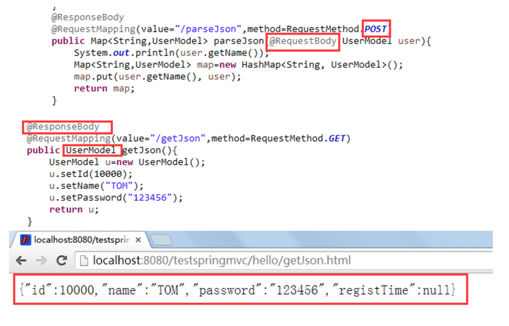
1 | // 让Spring MVC不处理静态资源 |
Lecture 11
SSH
分层：
- Web 层
（controller）：处理用户请求并予以响应，需要业务层bean提供业务支持 - 业务层：为
Web层的controller方法提供业务方法支持，需要数据层bean提供数据支持 - 数据库：为业务层
bean的方法提供数据支持，需要提供sessionFactory来管理和使用映射对象
整合基本思路：
SpringMVC与Spring天然整合JPA/Hibernate整合到Spring- 关键是
entityManagerFactory - 将
datasource和entityManagerFactory作为bean配置到Spring中 - 在
Dao中注入entityManagerFactory - 当
Dao通过@Repository加入Spring容器
- 关键是
SSH 的 javaweb 项目中的容器：
Spring的容器：由listener启动，为父容器SpringMVC容器：由dispatchservlet启动，为子容器SpringMVC里在配置controller时，可以直接引用在spring中配置的service类；- 在
web.xml配置中，要先配置spring的配置，然后配置spring mvc的配置，否则spring mvc的子容器无法使用父容器中的资源 - 父容器中的
bean不能引用子容器中的bean
整合启动配置：
整合步骤：
- 在
web中启动Spring容器 - 配置监听器
- 将所有业务
bean通过注解部署到容器中
- 包扫描
Controller用@Controller注解
-Service用@Service 和@Transactional注解Dao用@Repository注解
Bean配置（datasource、 entityManagerFactory ）
SSH 架构项目分析设计